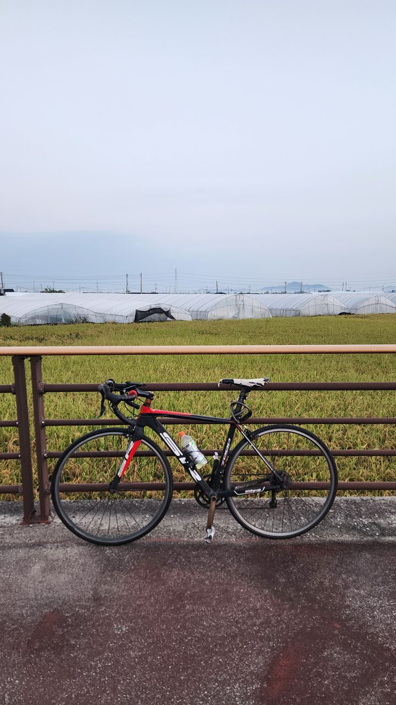
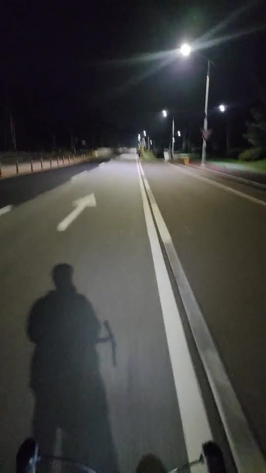

KAIST · Undergraduate Research Program · Ongoing research
Zameen reconstructs seven daily surface variables at 0.25° from 1.5° ERA5 inputs. It tests whether relationships learned from terrain can transfer to regions excluded from training.
My contributionI built the multi-scale graph downscaler and its spectral–structural learning objective. The model conditions message passing on terrain differences and atmospheric flow, then predicts a correction to bicubic interpolation.
0.283 K temperature RMSE72.4% lower than bicubic on the 2020 test year, averaged across six fitted domains. On three unseen domains, temperature RMSE is 0.428 K—46.2% lower than bicubic.
Perfect-model ERA5 experiment. Fine-scale spectral recovery is less consistent on unseen geography.
Daily 2 m temperature over South Asia, June–July 2020. The moving lens shows Zameen’s 0.25° output within the 1.5° input field. Both use the same colour scale.
Awards
First Prize · 2026 KMA Weather Big Data Contest
Disaster Safety category · Team lead, Asian Union ·
I led Asian Union in developing K-火, a graph-based model for predicting utility-pole fire risk in Gangwon using weather data and power-grid structure.
I examined changes in climate discussion across four Reddit communities around the February 2022 invasion, using topic modelling, sentiment analysis, and interrupted time-series analysis.
I used a physics-informed neural network to reconstruct a plate wavefield and locate a thin defect by jointly learning displacement and a spatial wave-speed map.
I’m interested in what a model needs to know about the world to generalize. In my downscaling work, I ask whether relationships between neighbouring terrain features can transfer to places excluded from training.
My background in civil and environmental engineering and computer science shapes how I approach these questions. I like following an experiment from its data representation through to the plots that show where the model fails.
Beyond Research
Outside research, I enjoy cycling and exploring music and culture. I’m always happy to exchange music recommendations or talk about the cultures and traditions people bring with them.


Contact
I welcome research collaborations and questions about my work in weather forecasting, climate downscaling, and geospatial machine learning.